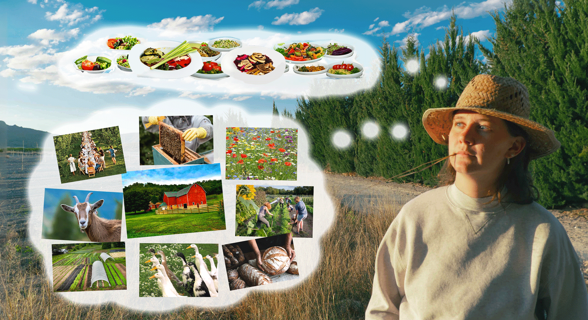

Renée's Farm

Renée Verhoeven is an agro-ecologist and regenerative chef based in Rotterdam. She holds an MA from Wageningen University in Resilient Food and Farming Systems, and recently launched her catering business Renee’s Farm. Through her creative vegetarian cooking, she feeds us not only with seasonal and local foods, but also with her stories on the holistic farming practices behind them. Renée works towards running her own farmstead one day where these passions for cooking, organic farming and biodiversity can come together.
🐓 follow Renée's Farm on Instagram

Reserve here for the next Regenerative Dinner: Three Sisters edition, 9 Feb 18:00 at restaurant Rotonde in Rotterdam!🌽